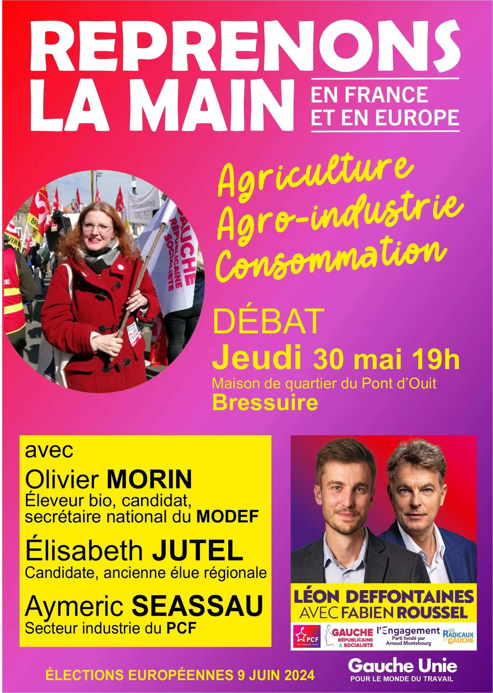

Annonce archivée
Bressuire. Le débat du 30 mai sur l’agriculture, de la production à la consommation
Date indiquée par Facebook · 28 mai 2024
Repères éditoriaux
Nous avons donné rendez-vous à 19 h à la maison de quartier du Pont d’Ouit. L’affiche annonce Olivier Morin, Élisabeth Jutel et Aymeric Seassau.
Texte conservé avec la publication
Le 30 mai, 19h à la maison de quartier du Pont d’Ouit à #bressuire.
Dans le cadre des élections européennes, avec la liste #GaucheUnie, nous vous proposons un débat sur les questions de l’axe agriculture / agro-industrie / consommation.
Avec
Olivier Morin, éleveur bio et secrétaire national du MODEF et candidat,
Elisabeth Jutel de Mauléon, ancienne élue régionale et candidate,
Aymeric Seassau, maire-adjoint de Nantes, membre de la commission industrie du PCF.
À l’heure où le gouvernement propose une loi agriculture qui ne répond pas aux besoin des agriculteurs, mais veut renforcer le caractère productiviste de ce secteur, nous souhaitons faire un point sur ces questions très importantes dans notre région.
#electionseuropeennes2024
#leondeffontaines
PCF - Parti Communiste Français
Gauche Républicaine & Socialiste
L'Engagement
Les Radicaux de Gauche - LRDG
Le 30 mai, 19h à la maison de quartier du Pont d’Ouit à #bressuire.
Dans le cadre des élections européennes, avec la liste #GaucheUnie, nous vous proposons un débat sur les questions de l’axe agriculture / agro-industrie / consommation.
Avec
Olivier Morin, éleveur bio et secrétaire national du MODEF et candidat,
@[522634449:2048:Elisabeth Jutel] de Mauléon, ancienne élue régionale et candidate,
Aymeric Seassau, maire-adjoint de Nantes, membre de la commission industrie du PCF.
À l’heure où le gouvernement propose une loi agriculture qui ne répond pas aux besoin des agriculteurs, mais veut renforcer le caractère productiviste de ce secteur, nous souhaitons faire un point sur ces questions très importantes dans notre région.
#electionseuropeennes2024
#leondeffontaines
@[100044518955973:2048:PCF - Parti Communiste Français]
@[100066144116699:2048:Gauche Républicaine & Socialiste]
@[100069075134907:2048:L'Engagement]
Les Radicaux de Gauche - LRDG

Sources
Archive rouge · export Facebook · AR-0002-FB-01374
À lire aussi · À Bressuire, agriculture, industrie et pouvoir d’achat au débat du 30 mai